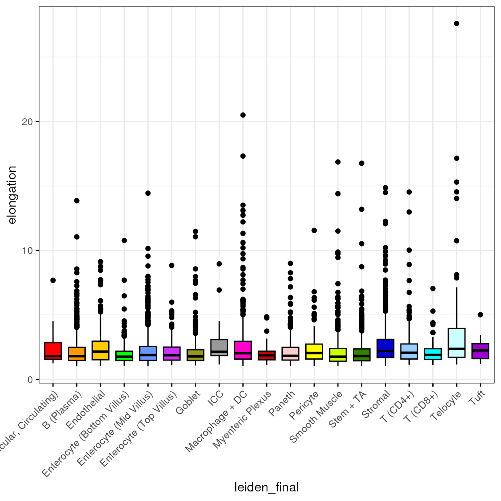

morphology.Rmd
eh <- ExperimentHub()## snapshotDate(): 2022-10-24## ExperimentHub with 9 records
## # snapshotDate(): 2022-10-24
## # $dataprovider: Boston Children's Hospital
## # $species: Mus musculus
## # $rdataclass: data.frame, matrix, EBImage
## # additional mcols(): taxonomyid, genome, description,
## # coordinate_1_based, maintainer, rdatadateadded, preparerclass, tags,
## # rdatapath, sourceurl, sourcetype
## # retrieve records with, e.g., 'object[["EH7543"]]'
##
## title
## EH7543 | Petukhov2021_ileum_molecules
## EH7544 | Petukhov2021_ileum_dapi
## EH7545 | Petukhov2021_ileum_membrane
## EH7547 | Petukhov2021_ileum_baysor_segmentation
## EH7548 | Petukhov2021_ileum_baysor_counts
## EH7549 | Petukhov2021_ileum_baysor_coldata
## EH7550 | Petukhov2021_ileum_baysor_polygons
## EH7551 | Petukhov2021_ileum_cellpose_counts
## EH7552 | Petukhov2021_ileum_cellpose_coldata
spe <- MerfishData::MouseIleumPetukhov2021(segmentation = "baysor",
use.images = FALSE,
use.polygons = FALSE)
spe## class: SpatialExperiment
## dim: 241 5800
## metadata(0):
## assays(2): counts molecules
## rownames(241): Acsl1 Acta2 ... Vcan Vim
## rowData names(0):
## colnames: NULL
## colData names(7): n_transcripts density ... leiden_final sample_id
## reducedDimNames(0):
## mainExpName: NULL
## altExpNames(0):
## spatialCoords names(2) : x y
## imgData names(0):Here, we inspect the available basic morphological features from the Baysor segmentation:
colData(spe)## DataFrame with 5800 rows and 7 columns
## n_transcripts density elongation area avg_confidence leiden_final
## <numeric> <numeric> <numeric> <numeric> <numeric> <character>
## 1 39 0.02159 5.082 1806 0.8647 Endothelial
## 2 165 0.02016 1.565 8186 0.9528 Smooth Muscle
## 3 139 0.02279 1.820 6100 0.9762 Smooth Muscle
## 4 80 0.01828 1.546 4376 0.9076 Smooth Muscle
## 5 75 0.02479 3.475 3025 0.8952 Smooth Muscle
## ... ... ... ... ... ... ...
## 5796 1 NaN NaN NaN 1.0000 Removed
## 5797 9 0.02397 2.587 375.5 0.8405 Removed
## 5798 4 0.02204 10.760 181.5 0.9962 Removed
## 5799 1 NaN NaN NaN 0.9454 Removed
## 5800 4 0.03587 17.720 111.5 0.9897 Removed
## sample_id
## <character>
## 1 ileum
## 2 ileum
## 3 ileum
## 4 ileum
## 5 ileum
## ... ...
## 5796 ileum
## 5797 ileum
## 5798 ileum
## 5799 ileum
## 5800 ileumWe stratify the available cell features by cell type, starting with the number of transcripts expressed in each cell:
spl <- split(spe$n_transcripts, spe$leiden_final)
df <- reshape2::melt(spl)
colnames(df) <- c("n_transcripts", "leiden_final")We then plot the distribution of number of transcripts by cell type:
bp <- ggpubr::ggboxplot(df, x = "leiden_final", y = "n_transcripts",
fill = "leiden_final", ggtheme = theme_bw(),
palette = "ucscgb", legend = "none")
bp + theme(axis.text.x = element_text(angle = 45, hjust = 1))From this plot it is apparent that, for example, T (CD8+) cells express more transcripts than T (CD4+) cells, which we can corroborate with a simple t-test:
t.test(spl[["T (CD8+)"]], spl[["T (CD4+)"]])##
## Welch Two Sample t-test
##
## data: spl[["T (CD8+)"]] and spl[["T (CD4+)"]]
## t = 11.582, df = 142.71, p-value < 2.2e-16
## alternative hypothesis: true difference in means is not equal to 0
## 95 percent confidence interval:
## 99.13293 139.93728
## sample estimates:
## mean of x mean of y
## 175.72800 56.19289(This is overdispersed count data though):
mean(spl[["T (CD8+)"]])## [1] 175.728
var(spl[["T (CD8+)"]])## [1] 12390.51
length(spl[["T (CD8+)"]])## [1] 125
spl <- split(spe$density, spe$leiden_final)
df <- reshape2::melt(spl)
colnames(df) <- c("density", "leiden_final")
df <- subset(df, leiden_final != "Removed")We then plot the distribution of by cell type:
bp <- ggpubr::ggboxplot(df, x = "leiden_final", y = "density",
fill = "leiden_final", ggtheme = theme_bw(),
palette = "ucscgb", legend = "none")
bp + theme(axis.text.x = element_text(angle = 45, hjust = 1))
spl <- split(spe$elongation, spe$leiden_final)
df <- reshape2::melt(spl)
colnames(df) <- c("elongation", "leiden_final")
df <- subset(df, leiden_final != "Removed")We then plot the distribution of by cell type:
bp <- ggpubr::ggboxplot(df, x = "leiden_final", y = "elongation",
fill = "leiden_final", ggtheme = theme_bw(),
palette = "ucscgb", legend = "none")
bp + theme(axis.text.x = element_text(angle = 45, hjust = 1))
Let’s look at this irrespective of cell type annotation and identify top 10% cells with highest elongation:
q90 <- quantile(df$elongation, 0.9)
q90## 90%
## 3.7491
sum(df$elongation > q90)## [1] 520
hi <- ggpubr::gghistogram(df, x = "elongation", bins = 30,
fill = "#00AFBB", ggtheme = theme_bw())
hi + geom_vline(xintercept = q90, color = "red", linetype = "dashed")
spl <- split(spe$area, spe$leiden_final)
df <- reshape2::melt(spl)
colnames(df) <- c("area", "leiden_final")
df <- subset(df, leiden_final != "Removed")We then plot the distribution of by cell type:
bp <- ggpubr::ggboxplot(df, x = "leiden_final", y = "area",
fill = "leiden_final", ggtheme = theme_bw(),
palette = "ucscgb", legend = "none")
bp + theme(axis.text.x = element_text(angle = 45, hjust = 1))Let’s look at this irrespective of cell type annotation and identify top 10% cells with highest elongation:
q90 <- quantile(df$area, 0.9)
q90## 90%
## 12430
sum(df$area > q90)## [1] 518
hi <- ggpubr::gghistogram(df, x = "area", bins = 30,
fill = "#00AFBB", ggtheme = theme_bw())
hi + geom_vline(xintercept = q90, color = "red", linetype = "dashed")
spl <- split(spe$avg_confidence, spe$leiden_final)
df <- reshape2::melt(spl)
colnames(df) <- c("avg_confidence", "leiden_final")
df <- subset(df, leiden_final != "Removed")We then plot the distribution of by cell type:
bp <- ggpubr::ggboxplot(df, x = "leiden_final", y = "avg_confidence",
fill = "leiden_final", ggtheme = theme_bw(),
palette = "ucscgb", legend = "none")
bp + theme(axis.text.x = element_text(angle = 45, hjust = 1))